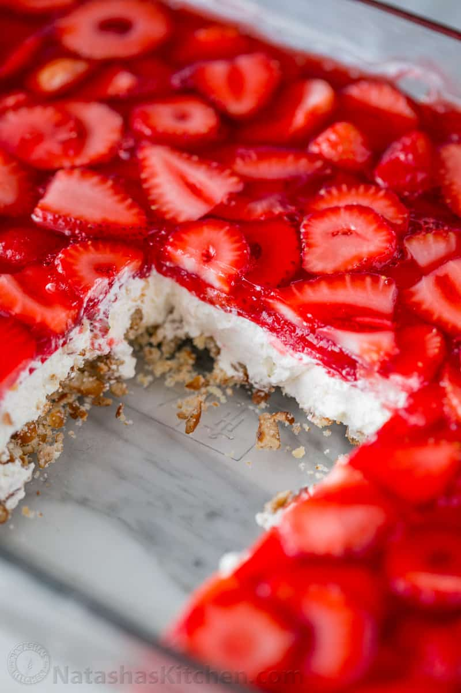

Granny's Pretzel Salad

This right here is an all-time classic. The best dessert at any family event was this pretzel salad my grandma used to make.
This is probably one of the best tasting things I have ever eaten, aside from the coffee cake on the main page. Today we are gonna learn how to make this delicious dessert!
Ingredients
- 21/2C of Crushed Pretzels
- 11/2C of Divided Sugar
- 3/4C of Melted Butter
- 12oz of Soft Cream Cheese
- 2tsp Vanilla
- 12oz Cool Whip
- 3-4C of Frozen Sliced Strawberries
- 6oz/2 Packages of Strawberry Jello
- 2C of Boiled Water
Baking Time
- Pre-Heat the Oven to 350 Degrees
- Combine the Pretzels, 3/4 of Sugar, and Melted Butter
- Press into the bottom of a 9x13 pan
- Bake for 10 minutes
- Let it cool completely
- Combine 2C of boiling water w/ jello and stir
- Stir in the sliced Strawberries
- Chill in fridge until partially set, usually about an hour
- Beat the cream cheese, remaining 3/4C of sugar, and the vanilla until well mixed
- Fold in cool whip
- Spread cream cheese mixture on top of pretzel crust, making sure it completely covers the crust and touches the sides of the pan.
- Place into fridge until chilled
- Pour the Strawberry Jello over the top of the cream cheese mix
- Cover and refrigerate until firm, about 3-4 hours